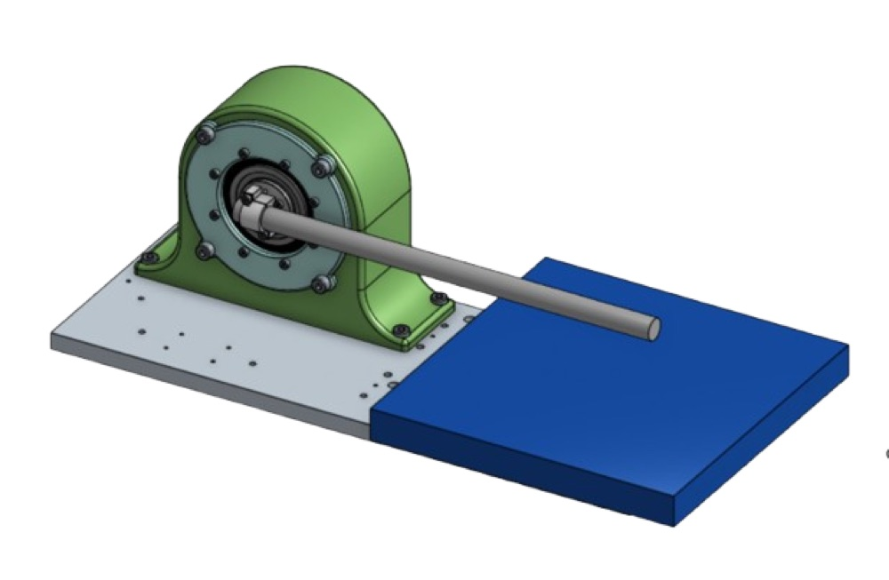
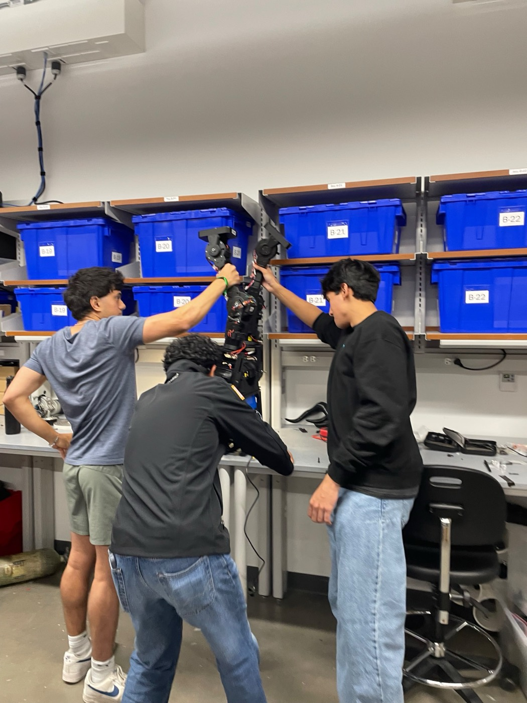
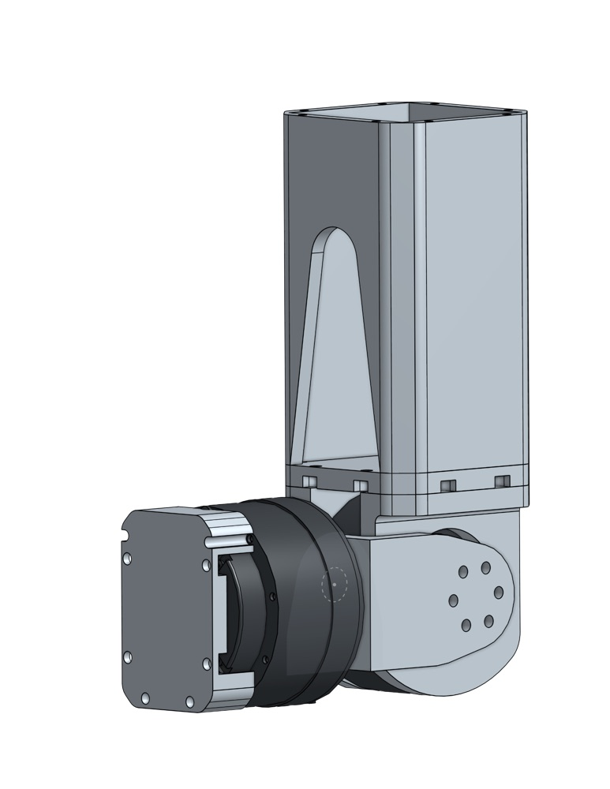
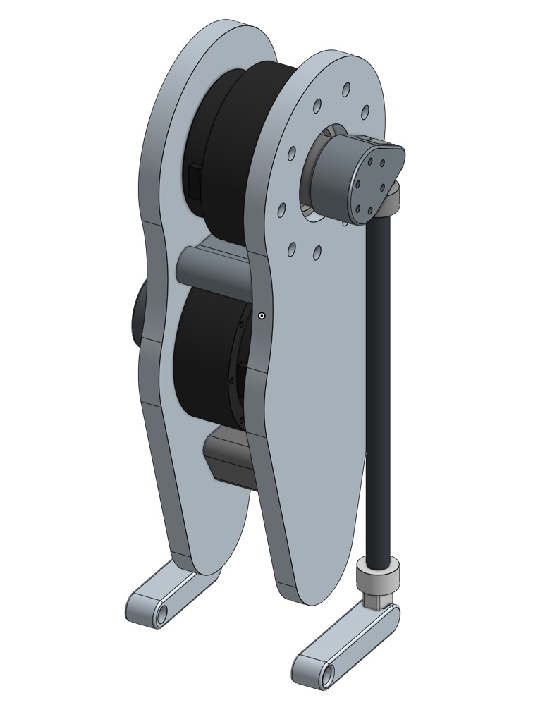
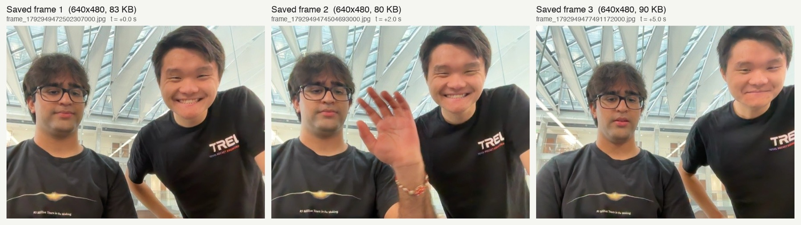
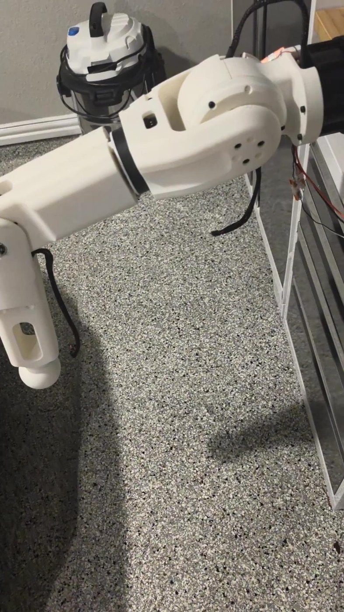

Robots
We are building three robots in sequence: a bipedal walker to test our controls, the Texas Humanoid for research labs, and BevoBot, a larger custom humanoid.

Bob the Walker
Bob is a simple bipedal platform that gives our software team real hardware to test code on. We built it quickly and cheaply so controls work could start before the Texas Humanoid is finished.
The legs use RobStride actuators, chosen for their cost and capability. The structure is 3D-printed parts on aluminum extrusion, which kept the design easy to change.
- Height
- 3 ft 4 in
- Proportions
- Joint lengths from a 4 ft 8 in person
- Actuators
- 10 RobStride (RS02, RS03, RS06), five per leg
- Structure
- 3D-printed parts, aluminum extrusion
- Simulation
- NVIDIA Isaac Lab on NVIDIA Brev
- Status
- PID control on hardware
How we built it

Skeleton
We scaled joint lengths from a human, estimated the load on each joint and picked a RobStride model to match.

Mechanical design
We packaged the actuators into two versions of the legs. Support bearings spread each joint’s load across two contact surfaces.

Simulation model
We converted the CAD into a URDF with revolute joints and limits, per-part densities from the slicer, and a root link and collision geometry.

Actuator testing
Before integration we wired every actuator, confirmed each one on the CAN bus and measured its torque on a static dynamometer.

Training
We trained walking and balancing policies in Isaac Lab on NVIDIA Brev. In simulation the walker reaches 1 m/s.

Sim-to-real
On hardware the learned policies caused unstable oscillations, so we moved to a PID controller with stiffer gains on every joint except the ankles.
Next steps
Balance
Tune the PID controller and add reinforcement learning for more robust stabilization.
Walk
Bring the walking policy onto hardware and iterate until the walker walks reliably.
Machine
Rebuild the structure in metal for more rigidity than 3D-printed parts allow.

Texas Humanoid
The Texas Humanoid is an open-source, lower-cost humanoid for research labs. Before designing it, we asked several UT Austin labs what they need from an affordable humanoid and wrote their feedback into a product requirements document.
The design is in progress. A preliminary design review is planned for December 2026 to January 2027, and we plan to unveil the robot in April 2027.
- Type
- Open-source research humanoid
- Designed for
- UT Austin research labs
- Design review
- December 2026 – January 2027
- Unveiling
- April 2027
- Status
- Preliminary design
Key requirements
Manipulation
Human-like reach, gestures and dexterity.
Modularity
Swappable hands, sensors and compute.
Robustness
Withstands falls, failed controllers and repeated testing.
Design approach
Define requirements
Walking, squatting, manipulation and payload requirements, with representative motions, joint ranges and load cases.
Parametric model
A parametric robot model for comparing actuator placements and architectures.
Simulate and analyze
Joint torques, speeds and loads from simulation, used to size the actuators.
Iterate and validate
Check predicted loads against actuator limits, refine geometry and packaging, then move into CAD, FEA and hardware tests.
Subsystems in progress

Neck
Yaw-pitch neck.

Shoulder
Pitch-roll-yaw shoulder. The pitch actuator is angled to avoid a singularity.

Elbow
Pitch-roll elbow.

Wrist
Wrist fitted with the open-source UMI gripper.

Knee
Knee joint driven through a four-bar linkage.

Foot
Spring-loaded foot with toe pitch.

Lower leg
Parallel mechanism driven by rotary actuators.

Actuator
Custom actuator benchmarked against the RobStride RS02: an off-the-shelf drone motor with encoders and FOC control, and a planetary gearbox.

Hands
A 3D-printed, tendon-driven finger with minimal tendon cross-talk. We are comparing FDM and SLA printing for fine features.

Electrical
A custom SPI-to-CAN board for multiple CAN channels, a power distribution PCB, a custom battery, and fault detection with safety stops.

Perception
ROS nodes for video capture, a data pipeline for motor telemetry and images, and human tracking with YOLOX-Nano.

BevoBot
BevoBot will be a larger, custom-built humanoid developed with Dr. Justin Hart's Living with Robots Lab at UT Austin, optimized for common human tasks and gestures.
It will build on what we learn from the walker and the Texas Humanoid: a stiffer structure, less mass, integrated wiring, and better simulation and control infrastructure.
- Target height
- 5 ft 6 in – 5 ft 8 in
- Actuators
- Custom, designed in-house
- Partner
- Living with Robots Lab, UT Austin
- Timeline
- Fall 2027 – Spring 2028
- Status
- Planning
Long-term direction
Research platform
Give UT Austin labs affordable, capable humanoids, and the engineers to work on them, for real-world research.
Competition
Help start an FSAE-style humanoid competition between university teams.
Each generation
Use advances in reinforcement learning, researcher feedback and human interaction studies to make each robot more capable than the last.
Tele-operated arm
Over the summer of 2026, before the team launched, we designed and built a tele-operated robot arm.

Follow the build
We post progress on our robots as we go. The gallery has photos and renders from every stage.